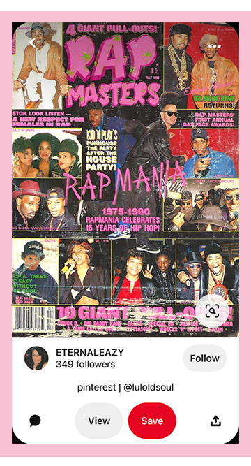

<!DOCTYPE html>
<html lan="en"></html>
<head>
    <title>Jazz's Time Capsule</title>
    <meta charset="UTF-8">
    <link rel="stylesheet" type="text/css" href="../css/main.css">
    <link rel="stylesheet" href="https://use.typekit.net/fzl6wno.css">
</head>
<nav>
    <a href="../index.html"></a>
    <a href="../interests/interests.html"></a>
    <a href="../activity/activity.html"></a>
</nav>
<body>
    <h1> &#9733 Interests &#9733 </h1>
    <p> From our research, we've seen that Jazz has a variety of interests, ranging from content on spirituality and personal wellness to content about fashion. We have derived these snippets of her personal interests by looking at a deep dive of her Instagram explore page, Youtube, and Pinterest accounts.<p></p>
    <header>
        <h3>Jazz's Recent Instagram Explore Page</h3>
    </header>
     
     
     
     
     
    <header>
        <h3>Recently Liked YouTube Videos</h3>
    </header>
     <p> Among her recently liked videos on YouTube, we found these three videos really encompasses her interests reflected on the platform. She enjoys using meditation videos, watches many lofi study music videos, and also likes light-hearted and playful comedic content. Jazz also likes watching fashion videos for her personal inspiration.</p>
    <iframe width="560" height="315" src="https://www.youtube.com/embed/j7d5Plai03g" title="YouTube video player" frameborder="0" allow="accelerometer; autoplay; clipboard-write; encrypted-media; gyroscope; picture-in-picture" allowfullscreen>
    </iframe>
    <iframe width="560" height="315" src="https://www.youtube.com/embed/RBiEivpJ7_k" title="YouTube video player" frameborder="0" allow="accelerometer; autoplay; clipboard-write; encrypted-media; gyroscope; picture-in-picture" allowfullscreen></iframe>
    <iframe width="560" height="315" src="https://www.youtube.com/embed/X7yYJnu8siw" title="YouTube video player" frameborder="0" allow="accelerometer; autoplay; clipboard-write; encrypted-media; gyroscope; picture-in-picture" allowfullscreen></iframe>
    <iframe width="560" height="315" src="https://www.youtube.com/embed/5F198PZP8Jk" title="YouTube video player" frameborder="0" allow="accelerometer; autoplay; clipboard-write; encrypted-media; gyroscope; picture-in-picture" allowfullscreen></iframe>
    <br>
    <header>
        <h3>Liked Pins Found on Jazz's Pinterest</h3>
     </header>
     <p> Here are some pins we found liked from Jazz's Pinterest account. Different from her other interests shown on her other platforms, we have gathered from Jazz's Pinterest that she gets heavy inspiration from vintage old school magazines, japanese illustrations, and colorful graphic design posts.</p>
     
     
     
     
     
     
     
</body>
